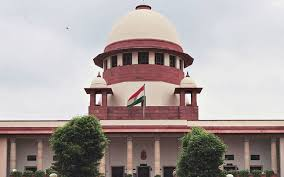
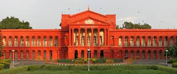
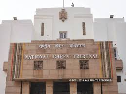
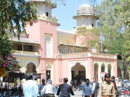

The types of court in India are given below:
SUPREME COURT :

The Supreme Court of India is the highest or the apex
judicial forum and final court of appeal as establised
by Part 5th,Chapter 4th of the Constitution of India.
The Supreme court enjoys writ,appellate,original and
advisory jurisdiction.In addition to this,the Supreme
Court and High Court also enjoy the power of judicial
review.
High Court:

High Court are the highest courts at the States and
Union Territories level.These court have jurisdiction
over a State,a Union Territories or a group of States
and Union Territories.The High Court in India enjoys
writ,appellate and revisional jurisdiction,whereas
High court at Calcutta,Mumbai,Delhi and Chennai also
enjoy original jurisdiction.
VARIOUS TRIBUNALS AND APPELLATE BOARDS:

The Indian judicial system also consist of many
tribunals and Appellate Boards constituted for a
specific purpose.The power,jurisdiction and proc-
edure of these forums is Genrally governed by the
status constituting them.
Intellectual property Appellate Board is one of the
most prominent among these forums and it enjoys app-
ellate as well as original jurisdiction in IP matters.
DISTRICT AND SESSION COURT:

Generally,each state is divided into judicial distri-
cts presided over by a 'DISTRICT AND SESSION JUDGE'.
He is knows as a district judge when he presides over
a civil case,and a session judge when he presides over
a criminal case.he is the highest judicial authority at
district level.constitution of court below this level
varies from state to state.